측량및지형공간정보기사 (2013-09-28 기출문제)
1과목: 측지학 및 위성측위시스템
1. 구면삼각형과 구과량에 대한 설명으로 옳지 않은 것은?
- 구과량은 구면삼각형의 면적(A)에 비례하고 구 반지름의 제곱에 반비례한다.
- 구면삼각형의 내각의 합은 “180° - 구과량”으로 180°보다 작다.
- 일반측량에서 구과량은 미소하므로 구면삼각형 면적 대신에 평면삼각형 면적을 사용해도 크게 지장이 없다.
- 구면삼각형의 계산에 비교적 소규모 지역에서는 르장드르 정리를 이용한다.
(정답률: 68%)

2. UTM 좌표에 대한 설명으로 옳지 않은 것은?
- 전 세계를 60×20의 격자망으로 형성한다.
- 우리나라는 51S와 52S의 지역대에 속한다.
- 경도는 8°, 위도는 6°로 분할하여 나타낸다.
- 위도 80° S부터 84° N까지의 지역을 나타낸다.
(정답률: 71%)
3. GIS에서 두 개의 주파수를 사용하는 주된 이유는?
- 전리층의 효과를 제거(보정)하기 위해
- 수신기 오차를 제거(보정)하기 위해
- 시계오차를 제거(보정)하기 위해
- 다중 반사를 제거(보정)하기 위해
(정답률: 74%)
4. 시구상 한 점과 지구중심을 잇는 방향선이 적도면과 이루는 각으로 표시되는 위도는?
- 측지위도
- 지심위도
- 천문위도
- 화성위도
(정답률: 50%)
5. GPS의 측위오차 중 위성의 배치상황에 따라 측위 정확도의 영향을 나타내는 것은?
- S/A
- 전리층영향
- DOP
- Cycle slip
(정답률: 61%)
6. 지구상의 어느 한 점에서 타원체의 법선과 지오이드의 법선은 일치하지 않게 되는데 이 두 법선의 차이를 무엇이라 하는가?
- 중력 편차
- 지오이드 편차
- 중력 이상
- 연직선 편차
(정답률: 60%)
7. 다음 줄 사이클 슬립(cycle slip)의 발생과 관련이 없는 경우는?
- 높은 지대로 주변에 장애물이 없는 곳에서 측량을 하는 경우
- 태양폭풍에 의해 전리층이 교란된 경우
- 수신기를 갑자기 이동한 경우
- 신호가 단절된 경우
(정답률: 78%)
8. 측지학에 대한 설명으로 옳지 않은 것은?
- 천체의 고도, 방위각 및 시각을 관측하여 미지점의 경위도 및 방위각을 결정하는 것을 천문측량이라 한다.
- 측지학적 3차원 위치결정이란 경도, 위도 및 높이를 산정하여 측지학적 좌표계를 결정하는 것이다.
- 지상으로부터 발사 또는 방사된 전자파를 인공위성으로 탐지하여 해석함으로써 지구자원 및 환경을 해결할 수 있는 것을 지상측량이라 한다.
- 지구곡률을 고려한 반경 11km 이상인 지역의 측량에는 측지학의 지식을 필요로 한다.
(정답률: 68%)
9. 중력에 대한 설명으로 옳지 않은 것은?
- 중력이상이 나타나는 지역은 구성물질의 밀도가 고르게 분포되어 있지 않다.
- 중력 가속도(중력)의 단위는 gal 이다.
- 중력이상이 (+)이면 그 지역에 가벼운 물질이 있다는 것을 의미한다.
- 중력측정의 결과에 대해 지형보정, 고도보정, 아이소스타시 보정을 한다.
(정답률: 77%)
10. 항정선(rhumb line)에 대한 설명으로 옳은 것은?
- 자오선과 항상 일정한 각도를 유지하는 지표의 선
- 양극을 지나는 대원의 북극과 남극 사이의 절반으로 중심각이 180°의 대원호
- 지표상 두 점간의 최단거리로 지심과 지표상 두 점을 포함하는 평면과 지표면의 교선
- 지구타원체상 한 점의 법선을 포함하며 그 점을 지나는 자오면과 직교하는 평면과 타원체면과의 교선
(정답률: 60%)
11. 지오이드에 대한 설명으로 옳지 않은 것은?
- 지오이드는 등포텐셜 면이다.
- 지오이드는 표고의 기준면이다.
- 지오이드는 평균 해수면을 육지까지 연장한 가상곡면이다.
- 일반적으로 지오이드는 육지에서 회전타원체와 일치한다.
(정답률: 66%)
12. 그림과 같이 A지점에서 GPS로 관측한 타원체고(h)가 37.238m이고 지오이드고(N)는 21.524m를 얻었다. A점에서 취득한 높이 값을 이용하여 수준측량 한 결과 C점의 표고는? (단, 거리는 타원체면상의 거리이고 A, B, C점의 지오이드는 동일하며 연직선편차는 0으로 가정한다.)
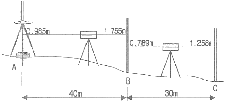
- 13.475m
- 14.475m
- 15.475m
- 16.475m
(정답률: 64%)
13. GPS를 이용한 기준점측량의 계획을 수립하려고 한다. 이 때 위성의 이용 가능 시간대와 배치 상황도를 참고하여 관측계획을 수립할 때 고려하여야 할 사항과 거리가 먼 것은?
- 상공 시계 확보를 위한 선점 위치의 지상 장애물 분포상황
- 임계 고도각 이상에 존재하는 사용 위성의 개수
- 관측 예정 시간대의 DOP 수치 파악
- 수신에 사용할 각 위성의 번호
(정답률: 75%)
14. 지구의 자기장 변화와 거리가 먼 것은?
- 부게이상
- 영년변화
- 일변화
- 자기폭풍
(정답률: 67%)
15. GPS 활용 분야로 가장 거리가 먼 것은?
- 수심해저 지형도 판독 기기로 활용
- 차량용 내비게이션 시스템에 활용
- 등산, 캠핑 등의 여가선용에 활용
- 유도무기, 정밀폭격, 정찰 등 군사용으로 이용
(정답률: 68%)
16. 다음 중 지자기를 나타내는 단위는?
- mCal
- Gauss
- Newton
- Watt
(정답률: 79%)
17. 위성항법시스템(GNSS:Global Navigation Satellite System)용 인공위성이 아닌 것은?
- Galileo
- GLONASS
- LANDSAT
- NAVSTAR GPS
(정답률: 73%)
18. 평면직교좌표의 원점에서 동쪽에 있는 A점에서 B점방향의 자북방위각을 관측한 결과 89° 10‘ 25“이었다. A점에서의 자침편차가 5° W일 때 진북방위각은?
- 84° 10‘ 25“
- 89° ⑤‘ 25“
- 89° 30‘ 25“
- 94° 10‘ 25“
(정답률: 62%)
19. GPS 절대측위에서 GDOP와 VDOP가. 2.3과 3.7이고 예상되는 관측데이터의 정확도(σ)가 2.5m일 때 예상할 수 있는 수평위치 정확도(σH)와 수직위치 정확도(σV)는?
- σH=±0.92m, σV=±1.48m
- σH=±1.48m, σV=±8.51m
- σH=±4.8m, σV=±6.20m
- σH=±5.75m, σV=±9.25m
(정답률: 47%)
20. 다음 중 대류츨과 전리층에 의한 지연효과가 가장 작은 관측치는?
- 일중위상차
- 이중위상차
- 삼중위상차
- 무차분 위상
(정답률: 74%)
2과목: 응용측량
21. 터널 내의 고저차 측량에서 두 측점이 천정에 설치되어 있을 때 아래와 같은 결과를 얻었다. 두 점간의 고저차는?
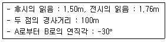
- 46.22m
- 49.74m
- 50.26m
- 52.74m
(정답률: 43%)
22. 교각(I)이 60°이고, 곡선반지름(R)이 150m, 노선의 시점에서 교점(I.P)까지의 추가거리가 540m일 때, 시단현의 편각은? (단, 중심말뚝 간격은 20m이다.)
- 1° 15‘ 38“
- 1° 35‘ 33“
- 2° ⑤‘ 38“
- 2° 33‘ 33“
(정답률: 46%)
23. 그림에서 V지점에 해당하는 종단곡선(Vertical curve)상의 계획고(Elevation)는? (단, 종단곡선은 2차포물선이고, A점의 계획고=65.50m)
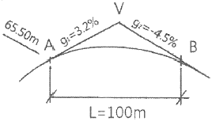
- 66.14m
- 66.57m
- 66.83m
- 67.49m
(정답률: 42%)
24. 축척 1:1200 지도에서 잘못하여 축척 1:1000로 측정하였더니 10000m2가 나왔다면 실제 면적은?
- 6944m2
- 8333m2
- 12000m2
- 14400m2
(정답률: 52%)
25. 그림과 같은 삼각형을 A로부터 밑변을 향해 a:b:c=5:3:2의 비율로 면적을 분할하기 위한 BP와 BQ의 거리가 순서대로 짝지어진 것은? (단, BC=200m)
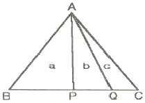
- 80m, 110m
- 90m, 100m
- 100, 140m
- 100m, 160m
(정답률: 52%)
26. 하천측량에서 그림과 같이 깊이에 따른 유속(m/sec)을 얻었을 때, 3점법에 의한 평균유속은?
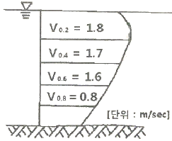
- 1.45m/sec
- 1.40m/sec
- 1.35m/sec
- 1.30m/sec
(정답률: 59%)
27. 터널의 시점(P)과 종점(Q)의 좌표가 P(1200m, 800m, 75m), Q(1600m, 600m, 100m)일 때 P로부터 Q로 터널을 굴진할 경우 경사각은?
- 2° 11‘ 9“
- 2° 13‘ 19“
- 2° 53‘ 59“
- 3° 11‘ 59“
(정답률: 31%)
28. 원곡선에 의한 중곡선 설치에서 상향기울기 5/1000와 하향기울기 35/1000가 반지름 3000m의 곡선 중에서 교차할 때 교점에서 곡선시점까지의 거리는?
- 120m
- 75m
- 60m
- 30m
(정답률: 43%)
29. 댐의 장기적 안정성을 조사하기 위한 변위측량에 대한 설명으로 틀린 것은?
- 삼각측량에 의하여 댐의 수평방향의 절대변위를 관측한다.
- 댐 표면과 부근의 고정점을 이용하여 반복 관측한다.
- 지형 및 정확도면에서 3개 이상의 고정점을 이용한다.
- 절대 위치결정에 대한 정확도는 5.0~10.0cm정도이다.
(정답률: 61%)
30. 해양지질학적 기초자료를 획득하기 위하여 음파 또는 탄성파 탐사장비를 이용하여 해저퇴적양상 또는 음향상분포를 조사하는 것을 무엇이라고 하는가?
- 해저지층탐사
- 해상중력관측
- 해저지형측량
- 해상지자기관측
(정답률: 49%)
31. 반지름이 100m, 교각이 55° 20‘ 일 때 접선장(T.L)은?
- 40.34m
- 52.43m
- 60.3m
- 72.43m
(정답률: 58%)
32. 터널 외 기준점 측량에 대한 설명으로 옳지 않은 것은?
- 터널입구 부근은 대개 지형이 나쁘고 좁은 장소가 많으므로 반드시 인조점을 설치한다.
- 측량의 정확도를 높이기 위해 터널 외 기준점 설치시 후시를 될 수 있는 한 길게 잡는다.
- 고저측략용 기준점은 터널 입구 부근과 떨어진 곳에 2개소 이상 설치하는 것이 좋다.
- 터널 외 기준점 측량은 작업터널 완성 후 터널 내 단면변형 관측을 위해 수행한다.
(정답률: 36%)
33. 등고선이 그려져 있는 지형도의 토량을 계산하고자 한다. 85m등고선의 면적 A1=970m2, 90m등고선의 면적 A2=900m2, 95m등고선의 면적 A3=500m2, 100m등고선의 면적 A4=100m2, 1⑤등고선의 면적 A5=30m2일 때 85m등고선 이상의 토량은? (단, 각주 공식 사용)
- 10000m3
- 50000m3
- 1000m3
- 500m3
(정답률: 50%)
34. 선박의 안전통항을 위한 교량 및 가공선의 높이를 결정하기 위한 기준면으로 사용되는 것은?
- 평균해면
- 기본수준면
- 약최고고조면
- 평균저조면
(정답률: 66%)
35. 하천측량에 관한 다음 설명 중 옳지 않은 것은?
- 갈수위란 355일 이상 이 수위보다 적어지지 않는 수우를 말한다.
- 평균수위란 어떤 기간의 수위 중 이보다 높은 수위와 낮은 수위의 관측횟수가 같은 수위이다,
- 수위관측소는 상ㆍ하류의 길이가 약 100m 정도는 직선이어야 하고 유속이 크지 않아야 한다.
- 수위관측소는 평상시나 홍수 때도 쉽게 관측할 수 있는 곳이어야 한다.
(정답률: 67%)
36. 하천측량에서 거리표 설치와 고저측량에 관한 설명으로 틀린 것은?
- 제방이 있는 경우 거리표는 하천의 중심에 직각방향으로 양안에 설치한다.
- 거리표는 반드시 기점으로부터 하천의 우안을 따라 500m 간격으로 설치한다.
- 횡단측량은 양안의 거리표를 기준으로 그 선상의 고저를 측량한다.
- 하천측량에서의 고저측량 작업은 거리표 설치, 중단 및 횡단측량, 심천측량 등을 포함한다.
(정답률: 57%)
37. 곡선반지름 200m의 곡선에 캔트 0.38m를 붙인 노선의 설계속도는? (단, 레일간격 D=1.067m임)
- 약 8.44km/h
- 약 18.44km/h
- 약 26.42km/h
- 약 36.42km/h
(정답률: 50%)
38. 그림과 같이 곡선과 직선인 경계선에 쌓여 있는 면적을 심프슨(Simpson)의 제1법칙으로 구한 값은? (단. h0=3.2m, h1=10.4m, h2=12.8m, H3=11.2m, h4=4.4m이고 지거의 간격 d=9m이다.)
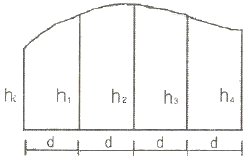
- 310m2
- 330m2
- 359m2
- 420m2
(정답률: 53%)
39. 경관측량에서 인식대상의 주체에 의한 분류에 해당되지 않는 것은?
- 인공경관
- 생태경관
- 자연경관
- 환경경관
(정답률: 41%)
40. 일반철도에서 직선과 곡선사이에 삽입되는 완화곡선의 식으로 가장 적합한 것은?
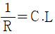
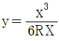
- ρ2=α2 sin2δ
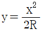
(정답률: 59%)
3과목: 사진측량 및 원격탐사
41. 공간해상도가 높은 전정색영상과 공간해상도가 낮은 칼라(다중분광)영상을 합성하여 공간해상도가 높은 칼라영상을 만드는데 사용하는 영상처리방법은?
- Fourier 변환
- 영상융합(lmag Fusion) 또는 해상도 융합(Resolution Merge)변환
- NDVI(Normalized Difference Vegetation Index) 변환
- 공간 필터링(Spatial Filtering)
(정답률: 63%)
42. 다음 중 Pushbroom 스캐닝 방식의 센서는?
- SPOT 위성의 HRV 센서
- LANDSAT 위성의 ETM+ 센서
- NOAA 위성의 AVHRR 센서
- RADARSAT 위성의 SAR 센서
(정답률: 46%)
43. 150mm 초점거리의 광각 카메라로서 촬영고도 4500m에서 220km/h의 운항속도로 항공사진을 촬영할 때에 사진노출점감의 죄소 소요시간은? (단, 사진의 크기는 23cm×23cm이고 비행방향의 중복도(forward overlap)는 60%이다.)
- 40초
- 45초
- 50초
- 60초
(정답률: 41%)
44. 입체 모델을 이루는 한 쌍의 사진을 입체시할 경우에 최적의 조건은?
- 종시차와 횡시차가 모두 있어야 한다.
- 종시차가 없어야 하고 횡시차는 있어야 한다.
- 종시차가 있어야 하고 횡시차는 없어야 한다.
- 종시차와 횡시차 모두 없어야 한다.
(정답률: 41%)
45. 기준면으로부터 산의 높이 h=100m이고 H=5000인 고도에서 연직사진을 찍어 원판 상의 산정에서 연직점까지의 거리가 10cm일 때의 기본변위는?
- 2mm
- 4mm
- 6mm
- 8mm
(정답률: 64%)
46. 항공사진 또는 위성영상을 지상기준점(GCP)을 이용해 왜곡된 영상의 지표와 실제 조표를 언계하여 영상의 좌표와 실제 지표 좌표를 연계하여 영상의 좌표를 지도 좌표를 지도 좌표계와 일치시키는 과정을 무엇이라 하는가?
- 대기보정(Atmospheroic Cprrection)
- 방사량보정(Radiometric Cprrection)
- 시스템보정(System Cprrection)
- 기하보정(Geometric Cprrection)
(정답률: 55%)
47. 30km×20km 지역을 축척 1:10000 항공사진으로 종중복 60%, 횡중복 30%로 촬영하고자 한다. 사진의 크기가 23cm×23cm일 경우에 입체모델의 수는? (단, 안전율 30%를 고려하여 계산한다.
- 4⑤매
- 452매
- 502매
- 527매
(정답률: 42%)
48. 다음 중 항공사진 필름의 신축을 측정하는데 사용하는 것은?
- 주점
- 지표
- 표정점
- 대공표지
(정답률: 23%)
49. 표정기준점(지상기준점)을 선정할 때의 유의사항에 대한 설명으로 옳지 않은 것은?
- 사진 상에서 명료한 점을 선택한다.
- 시간적으로 변하지 않는 점을 선택한다.
- 표정점은 지표면에서 가장 높은 곳에 위치하는 것이 좋다.
- 경사가 급한 지표면이나 경사변환선 상에 있지 않은 점을 선택한다.
(정답률: 50%)
50. ＜보기＞의 지구관측위성에서 취득되는 영상의 공간해상도를 고해상도부터 저해상도 순으로 나열한 것으로 옳은 것은?
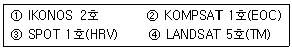
- ①-②-③-④
- ①-②-④-③
- ②-①-③-④
- ②-③-④-①
(정답률: 60%)
51. 항공사진을 스캐닝 하여 영상을 만들고자 한다. 축척 1:25000의 항공사진을 스캐닝 하여 영상소(pixel) 하나의 공간 해상력이 26.5cm가 되도록 하려면 스캐닝 해상력(dpi)은 얼마로 설정하여야 하는가?
- 600 dpi
- 1200 dpi
- 2400 dpi
- 4800 dpi
(정답률: 55%)
52. 원격탐사(remote sensing)에 관한 설명으로 옳지 않은 것은?
- 원격탐사는 다중 파장대에 의한 지구표면의 정보획득이 용이하며 측정자료가 수치로 기록되어 판독이 자동적이고 정량화가 가능하다.
- 원격탐사 자료는 물체의 반사 또는 방사 스펙트럼 특성 및 광원의 특성 등에 의한 영향을 받는다.
- 원격탐사의 자료는 대단히 양이 많으며 불필요한 자료가 포함되어 있어 보정이 필요하다.
- 원격센서를 능동적 센서와 수동적 센서로 구분할 때 대상물에서 방사되는 전자기파를 수집하는 방식을 능동적센서라 한다.
(정답률: 53%)
53. 항공사진을 촬영방향에 따라 분류할 때 수직사진과 경사사진의 구분 기준은?
- 광축과 연직선 사이의 경사각 3°
- 광축과 수평선 사이의 경사각 3°
- 광축과 연직선 사이의 경사각 5°
- 광축과 수평선 사이의 경사각 5°
(정답률: 40%)
54. 항공레이저측량의 장점이 아닌 것은?
- 수치표고모형의 제작이 편리하다.
- 고밀도의 지상좌표를 취득할 수 있다.
- 구름이나 대기 중의 부유물에 의한 반사가 없다.
- 수목사이를 관통하여 지면의 좌표를 취득할 수도 있다.
(정답률: 53%)
55. 수치지도 제작에 있어서 도화된 데이터를 표준분류체계에 따라 구분하여 지형지물의 공간정보와 속성정보를 연계시키는 작업을 무엇이라 하는가?
- 구조화편집
- 정위치편집
- 세선화편집
- 일반화편집
(정답률: 42%)
56. 고도가 매우 높은 궤도 상의 인공위성에 탑재한 프레임 사진기로 지구를 촬영할 경우와 가장 유사한 지도투영법은?
- TM 도법
- 원추도법
- 정사방위도법
- 심사방위도법
(정답률: 35%)
57. 디지털사진측량 또는 디지털원격탐사 자료의 처리 중 이용 가능한 영상자료의 재배열(Resampling)방법으로 적당치 않은 것은?
- 변위내삽법(Displacement Interpolation)
- 최근린내삽법(Nearest Neighbour)
- 공일차내삽법(Bilinear Interpolation)
- 3차원선내삽법(Cubic Convolution)
(정답률: 48%)
58. 사진지표가 없는 일반 사진기로 해석적 사진측량을 수행할 경우 정밀좌표측정기의 기계좌표와 지상좌표간의 변환식 결정에 가장 적합한 식은?
- 투영 변환식
- 직접선형 변환식
- 부등각사상 변환식
- 선형등각사상 변환식
(정답률: 39%)
59. 항공삼각측량의 조정방법으로 사진을 기본단위로 하며 정확도가 가장 높은 것은?
- DLT(Direct Linear Transformation)
- 광속조정법(Bundle Adjistment)
- 독립모형법(Indeoeoendent Model Triangulation)
- 부등각사상변환법(Affine Transformation)
(정답률: 56%)
60. 항공사진측량에 대한 설명으로 옳은 것은?
- 실내작업이 많고, 고가의 장비가 필요하기 때문에 넓은 지역의 측량에 비경제적이다.
- 기선이 없어도 정확도가 높은 도화기가 있으면 지도를 작도할 수 있다.
- 대체로 정확도가 균일하며, 사진의 축척이 클수록 경제적이다.
- 지상 기준점이 없으면 정확도가 높은 도화기가 있어도 정확한 지도제작은 불가능하다.
(정답률: 41%)
4과목: 지리정보시스템
61. 관심대상 시상의 좌측과 우측에 어떤사상이 있는지를 정의하고 특정 사상이 어떤 사상과 연결되어 있는지를 정의하며 특정 사상이 다른 사상의 내부에 포함되는가 혹은 다른 사상을 포함 하는가를 정의하는 것은 GIS 벡터베이터의 어떠한 특징에 대한 설명인가?
- 스파게티 데이터
- 래스터 데이터
- 3D 데이터
- 위상관계
(정답률: 53%)
62. 보기가 공통적으로 설명하는 것은?
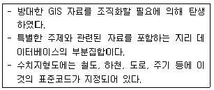
- 레이어
- 도엽
- 기본지리정보
- 메타데이터
(정답률: 38%)
63. 다음 두 데이블은 intersect한 결과로 맞는 것은?
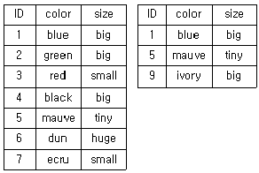
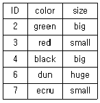
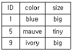
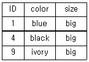
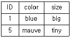
(정답률: 56%)
64. GIS 자료를 8bit의 영상으로 구성하려고 하는 경우 8bit 영상으로 표현할 수 있는 색의 수는?
- 64색
- 128색
- 256색
- 512색
(정답률: 70%)
65. GIS 구성요소 중 전체 구축비의 70~80%를 차지하는 항목으로 실세계를 컴퓨터상에 구현해 놓은 것이라 할 수 있는 것은?
- 네트워크
- 데이터베이스
- 하드웨어
- 소프트웨어
(정답률: 74%)
66. 점 자료에 대한 공간분석방법으로 적합한 것은?
- 최근린방법(nearest neighbour method)
- 플랙틀 차원(fractal dimension)
- 망분석 도표이론방법(network and graph theoretic method)
- 형상관측(shape measures)
(정답률: 66%)
67. GIS의 자료처리 및 구축을 위한 전반적인 작업과정으로 옳은 것은?
- 자료수집-자료입력-자료처리-자료조작 및 분석-출력
- 자료수집-자료조작 및 분석-자료처리-자료입력-출력
- 자료수집-자료입력-출력-자료처리-자료조작 및 분석
- 자료입력-자료수집-자료조작 및 분석-자료처리-출력
(정답률: 63%)
68. 수치표고모델(DEM)만을 이용하여 할 수 있는 작업과 거리가 먼 것은?
- 음영기복도 제작
- 토지피복 분석
- 가시도 분석
- 물의 흐름방량 분석
(정답률: 54%)
69. 다음은 벡터기반의 일반화 과정에서 단순화기법 중 하나를 설명하고 있다. 보기에서 설명하는 기법은 무엇인가?
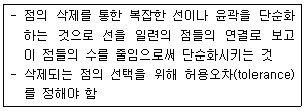
- Douglas-Peucker 알고리즘
- Lang 알고리즘
- Douglas 알고리즘
- Cromley 알고리즘
(정답률: 48%)
70. 다음의 GIS와 관련된 파일포맷 중 그 성격이 다른 것은?
- TIF
- JPG
- BIL
- TIGER
(정답률: 58%)
71. 일반적으로 데이터베이스(Database)는 서로 연관성이 있는 자료의 모임을 말하며, 사용자와 사용목적이 정해진 다음 설계가 이루어지고 구축이 된다는 특징을 가지고 있다. 데이터베이스의 장점이 아닌 것은?
- 자료가 표준화되고 구조적으로 저장될 수 있다.
- 초기 구축비용과 유지ㆍ관리 비용이 비교적 저렴하다.
- 다양한 응용프로그램에서 서로 다른 목적으로 편집되고 저장된 데이터가 사용될 수 있다.
- 자료의 검색과 정보의 추출이 빠르고 용이하다.
(정답률: 65%)
72. 지리정보시스템의 이용효과 중 거리가 먼 것은?
- 수치화된 자료에 대한 다양한 분석이 가능하다.
- DB 체계를 통하여 자료를 더욱 간편하게 사용하고 자료 입수도 용이하다.
- 투자 및 조사의 중복을 극대화 할 수 있다.
- 수집한 자료는 다른 여러 자료와 유용하게 결합할 수 있다.
(정답률: 69%)
73. 선형 벡터 데이터 구조가 아닌 것은?
- 아크(aec)
- 노드(node)
- 체인(chain)
- 폴리라인(polyline)
(정답률: 66%)
74. 수치지형모델의 DEM과 TIN에 대한 설명으로 틀린 것은?
- 수치표고모델(DEM)은 규칙적인 격자망에 표고를 표현한다.
- GPS로 취득한 지형자료를 이용할 경우엔 TIN 방법이 유리하다.
- DEM방법은 사진측량에 의한 자동 디지타이징에 의한 지형자료 취득 시에 유리하다.
- 지역적인 변화가 심한 복잡한 지형을 표현할 때는 DEM이 유리하다.
(정답률: 60%)
75. 다음의 괄호에 들어갈 GIS공간분석 가능은 무엇인가?
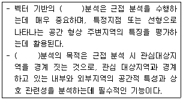
- Clip
- Intersect
- Buffer
- Union
(정답률: 60%)
76. GIS에서 좌표계를 구성하는 요소가 아닌 것은?
- 타원체
- 데이텀
- 투영법
- 레이블
(정답률: 52%)
77. 디지타이징에 의한 수치지도 제작시 발생할 수 있는 오차유형이 아닌 것은?
- 종이지도 신축에 의한 위치 오차
- 세선화(thinning) 과정에서의 형상 호차
- 선분 교차점에서의 교차 미달(undershooting) 현상
- 인접 다각형의 경계선 중복 부분에서의 갭(gap) 발생
(정답률: 65%)
78. 관계형 자료모델(Relation Data Model)의 기본 구조요소와 거리가 가장 먼 것은?
- Record(레코드)
- Attribute(속성)
- Sort(소트)
- Table(테이블)
(정답률: 65%)
79. 두 격자 자료의 입력 값이 각각 0과 1일 때, 각 논리연산자 AND, OR NAND, XOR의 결과를 순서대로 옳게 표현한 것은? (단, 참일 때 1, 거짓일 때 0)
- 0-1-0-1
- 1-1-0-0
- 1-0-0-1
- 0-1-1-1
(정답률: 43%)
80. 래스터(또는 그리드) 저장 기법 중 어떤 개채의 경계선을, 그 시작점에서부터 동서남북 방향으로 4방 혹은 8방으로 순차 진행하는 단위 벡터를 사용하여 표현하는 방법은?
- 사지수형 기법
- 블록 코드 기법
- 체인 코드 기법
- Run-length 코드 기법
(정답률: 44%)
5과목: 측량학
81. 최소제곱법에 관한 설명으로 틀린 것은?
- 관측방정식으로 구한 최확값이 조건방정식으로 구한 것에 비해 정확하다.
- 관측방정식의 수는 관측획수와 같다.
- 조건방정식의 수는 잉여관측횟수(자유도)와 같다.
- 잔차의 제곱의 합이 최소가 되도록 최확값을 정하는 조정법이다.
(정답률: 38%)
82. 삼각망 조정계산의 조건에 대한 설명이 틀린 것은?
- 어느 한 측점 주위에 형성된 모든 각의 합은 360° 이어야 한다.
- 삼각망의 각 삼각형의 내각의 합은 180° 이어야 한다.
- 한 측점에서 측정한 여러 각의 합은 그 전체를 한 각으로 관측한 각과 같다.
- 한 개 이상의 독립된 다른 경로에 따라 계산된 삼각형의 어느 한 변의 길이는 그 계산경로에 따라 달라야한다.
(정답률: 45%)
83. 장방형 토지를 거리측량하여 가로 106.85m와 세로 89.34m를 얻었다. 각각의 거리관측값에 ±1.0cm의 오차가 있었다면 면적의 오차는?
- ±0.90m2
- ±1.39m2
- ±14.01m2
- ±139.28m2
(정답률: 38%)
84. 큰 계곡이나 하천을 횡단하여 수준측량을 할 경우에 사용하는 수준측량의 방법으로 가장 알맞은 것은?
- 간접 수준측량
- 교로 수준측량
- 시거 수준측량
- 종단 수준측량
(정답률: 47%)
85. 수평각 관측법 중, 가장 정확한 조합각관측법으로 측량하려고 한다. 한 점에서 관측할 방향의 수가 5라면 총 관측각 수와 조건식 수는?
- 총 관측각 수 : 6, 조건식 수 : 4
- 총 관측각 수 : 6, 조건식 수 : 6
- 총 관측각 수 : 10, 조건식 수 : 4
- 총 관측각 수 : 10, 조건식 수 : 6
(정답률: 45%)
86. 지형측량의 결과인 등고선도의 이용과 가장 거리가 먼 것은?
- 지적도의 작성
- 노선의 도상선정
- 성토, 절토의 범위결정
- 집수면적의 측정
(정답률: 55%)
87. 축척 1:25000 지형도에서 100m 등고선 상의 점과 120m 등고선 상의 점간에 도상거리 20mm를 얻었다. 이 때 두 점의 경사각은?
- 2° 17‘ 26“
- 2° 18‘ 38“
- 16° 17‘ 15“
- 20° 17‘ 42“
(정답률: 31%)
88. 전자파 거리측량기의 위상차 관측방법이 아닌 것은?
- 위상지연방법
- 위상변위방법
- 진폭변조방법
- 디지털 측정법
(정답률: 32%)
89. 지형측량에서 동일방향의 경사면에서 경사의 크기가 다른 두 면의 접선(평면교선)을 무엇이라 하는가?
- 능선
- 계곡선
- 경사변환선
- 최대경사선
(정답률: 48%)
90. 어떤 거리를 7회 측량하여 평균제곱 오차값 ±8.0cm를 얻었다. 이 때 평균제곱오차를 ±5.0cm로 하기 위해서는 몇 번 관측을 하여야 하는가?
- 5회
- 13회
- 18회
- 20회
(정답률: 37%)
91. 다음 중 삼각망의 정확도가 높은 순서대로 나열된 것은?
- 단열 삼각망＞유심 삼각망＞사변형 삼각망
- 사변형 삼각망＞유심 삼각망＞단열삼각망
- 유심삼각망＞단열 삼각망＞사변형 삼각망
- 사변형 삼각망＞단열 삼각망＞유심 삼각망
(정답률: 58%)
92. 측점 A에 토털스테이션을 세우고 250m되는 거리에 있는 B점에 세운 프리즘을 시준 하였다. 이 때 프리즘이 말뚝중심에서 좌로 1.5cm가 떨어져 있었다면 이로 인한 각도의 오차는?
- 10.38"
- 12.38"
- 13.38"
- 14.38"
(정답률: 28%)
93. 그림과 같은 수준측량에서 P점의 표고는?
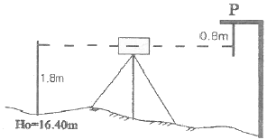
- 17.40m
- 18.00m
- 18.40m
- 19.00m
(정답률: 41%)
94. 트래버스의 전측선장이 900m일 때 폐합비가 1/5000로 하기 위한 축척 1/500 도면에서의 폐합오차는?
- 0.36mm
- 0.46mm
- 0.56mm
- 0.66mm
(정답률: 37%)
95. 공공측량시행자가 공공측량 작업계획서를 제출해야하는 시기에 대한 기준은?
- 공공측량을 하기 10일 전
- 공공측량을 하기 20일 전
- 공공측량을 하기 30일 전
- 공공측량을 하기 4일 전
(정답률: 45%)
96. 아래와 같은 기본측량성과의 국외 반출 금지 조항에서 밑줄 친 부분에 해당되지 않는 것은?
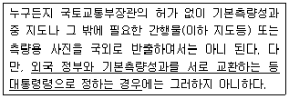
- 대한민국 정부와 외국정부간에 체결된 현정 또는 합의에 의하여 상호 교환하는 경우
- 축척 5만분의 1 이상의 대축척으로 제작된 지도를 국외로 반출되는 경우
- 정부를 대표하여 외국 정부와 교섭하거나 국제회의 또는 국제기구에 참석하는 자가 자료로 사용하기 위하여 반출하는 경우
- 관광객의 유지와 관광시설의 선전을 목적으로 제작된 지도를 국외로 반출하는 경우
(정답률: 60%)
97. 다음 중 지도도식규칙을 적용하지 아니할 수 있는 경우는?
- 기본측량 및 공공측량의 성과로서 지도를 간행하는 경우
- 기본 측량 및 공공측량의 성과를 직접으로 이용하여 지도에 관한 간행물을 발간하는 경우
- 기본 측량 및 공공측량의 성과를 간접으로 이용하여 지도에 관한 간행물을 발간하는 경우
- 기본 측량 및 공공측량의 성과를 이용하여 군용의 지도와 간행물을 발간하는 경우
(정답률: 53%)
98. 측량업의 등록기준으로 1명 이상의 특급기술자가 필요한 측량업은?
- 측지측량업
- 공공측량업
- 일반측량업
- 연안조사측량업
(정답률: 50%)
99. 측량의 기준에 대한 설명으로 옳지 않은 것은?
- 수로조사에서 간출지의 높이와 수심은 기본수준면을 기준으로 측량한다.
- 위치는 지리학적 경위도와 높이(평균해수면으로부터의 높이)로 표시한다.
- 측량의 원점은 대한민국 경위도원점 및 수준원점으로 한다.
- 해안선은 해수면이 약 최저저조면에 이르렀을 때의 육지와 해수면과의 경계로 표시한다.
(정답률: 48%)
100. 측량ㆍ수로조사 및 지적에 관한 법률의 기본 측량에 대한 정의로 옳은 것은?
- 기본측량은 모든 측량의 기초가 되는 공간정보를 제공하기 위하여 국토교통부장관이 실시하는 측량이다.
- 기본측량은 국가기관에서 시행하는 측량이다.
- 기본측량은 국토개발사업을 위하여 기본적으로 수행하여야 하는 측량이다.
- 기본측량은 국가기관의 위탁을 받은 민간인이 시행하는 측량이다.
(정답률: 58%)